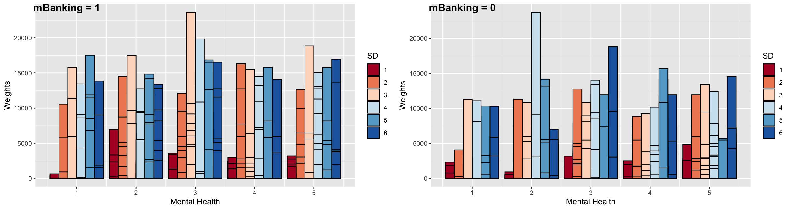

ds20 <- read_dta("data/cius2020_2022nov18_en.dta")
ds <- ds20Effect Of Mental Health on Mobile Banking
Data Analysis
In this project, I focused on analyzing how mental health relates to mobile banking adoption. I used data from the Canadian Internet Use Survey, which includes questions about digital habits, mental health, and demographics. You can find the dataset here. I built a fixed-effects logistic regression model, grouped by province, to control for regional differences as this was the sampling cluster. My main variable was self-reported mental health scores. I included factors like relationship satisfaction, smartphone dependency, and social media use. I also tested interaction effects to see if these variables change the way mental health influences mobile banking use. The following is a step-by-step on the coding and analysis of the project.
Importing Libraries
Note that not all libraries may be utilized. The most important ones are dplyr, lme4, tidyr, ggplot2, psych, corrr, haven, marginaleffects and margins and any related libraries to these.
Introducing the CIUS 2020
I first started by reading the entire PUMF file available.
This gives you information on how the survey was set up, why, and how things were measured. Then, I looked at the individual survey questions to see the available data, and how they were measured. In general, questions are measured numerically were answeres follow as such: > Yes : 1, No : 2, Valid Skip: 6, Don’t Know: 7, Refusal: 8, Not Stated: 9 Of course this differs question-by-question as some questions have other answer categories and some questions (which were note used in my study) asked for numerical input from the participants (like how much did you spend online last year). To help readers understand the data, I will include the question exactly as it appears in the CIUS 2020 PUMF Data Dictionary with corresponding answer choices and codes. These will be in a blue-bordered box, and will include the Variable name (on the PUMF file), Concept, Question Body and Answers. Then I will show you in R code how I’ve re-coded and used the question as a model variable. The Variables I need are as follows:
- Mobile banking adoption (
mBanking) - Age Group (
AGE) - Smartphone Dependent (
SD) - Income Quintile (
INC) - Friendship Satisfaction (
FRISAT) - Mental Health (MH)
- Family Relation Satisfaction (
FAMSAT) - Education Level (
EDU) - Immigration Status (
IMM) - Employment Status (
EMP) - Family Type (
FAM) - Gender (
SEX) - Social Media Use (
SNS) - Province (
province)
The data is available in various formats. To avoid data loss, I decided to use the .dta format (SAS file). You need the haven package to read SAS files. However, this file is 150MB in size and since I am uploading the code in my GitHub repository, I am not able to use the SAS file. So I’ve saved the data in a .csv file with only the columns I will need. This is how you’d read a SAS file:
Instead, I run this:
ds10 <- read.csv("ds.csv")
ds <- ds10 Step 1. Smartphone Users Select only those who use smartphones because the question is about “online banking” and not “mobile banking”.
Variable Name: DV_010A
Concept: Devices used
Question Text:
During the past three months, what devices did you use to access the Internet?
Did you use:
A smartphone
| Answer Categories | Code |
|---|---|
| Yes | 1 |
| No | 2 |
| Valid Skip | 6 |
| Don’t Know | 7 |
| Refusal | 8 |
| Not Stated | 9 |
ds <- ds %>%
mutate(
devSM = case_when(
dv_010a == 1 ~ 1, #yes
dv_010a == 2 ~ 0, #no
.default = -1, #any valid skip and not stated
)
)
ds <- ds %>%
filter(devSM == 1)Step 2. Mobile Banking Question Select the outcome variable, mobile banking:
Variable Name: UI_050D
Concept: Activities related to other online activities
Question Text:
During the past three months, which of the following other online activities, have you done over the Internet? Have you: Conducted online banking
| Answer Categories | Code |
|---|---|
| Yes | 1 |
| No | 2 |
| Valid Skip | 6 |
| Don’t Know | 7 |
| Refusal | 8 |
| Not Stated | 9 |
Step 3. Select Other Model Variables Now I will move on to selecting the predictors. For Smartphone Dependency:
Variable Name: SM_030A
Concept: Frequency of use of smartphone
Question Text:
In a typical day, how often do you check your smartphone?
| Answer Categories | Code |
|---|---|
| At least every 5 minutes | 01 |
| At least every 15 minutes | 02 |
| At least every 30 minutes | 03 |
| One time per hour | 04 |
| Once a day or a few times per day | 05 |
| Less than one time per day | 06 |
| Valid skip | 96 |
| Don’t know | 97 |
| Refusal | 98 |
| Not stated | 99 |
As you can see, this one is no longer just a yes/no question, but has a few categories for answers. Since I’m thinking of tracking “dependence”, it makes sense that the more frequent checking gets a higher value. So, this is how I code this variable:
ds <- ds %>%
mutate(
#timeline : past 3 months
mBanking = case_when(
ui_050d == 1 ~ 1, # Yes
ui_050d == 2 ~ 0, # No
.default = -1 # valid skip, don't know, refused, not stated
),
SD = case_when(
sm_030a == 1 ~ 6, # At least every 5 minutes
sm_030a == 2 ~ 5, # At least every 15 minutes
sm_030a == 3 ~ 4, # At least every 30 minutes
sm_030a == 4 ~ 3, # One time per hour
sm_030a == 5 ~ 2, # Once a day or a few times per day
sm_030a == 6 ~ 1, # Less than one time per day
.default = 96 # Valid skip 96 , Don’t know 97 , Refusal 98, Not stated 99
)
)
ds <- ds %>% filter(SD < 10)
ds <- ds %>% filter(mBanking != -1) The filters are just making sure that the skip’s, don’t know’s, refusal’s and not stated answers are dropped. This is not too big of a loss. There are 17,409 rows of data.
Friendship Satisfaction:
Variable Name: TS_010A
Concept: Satisfaction with relationships
Question Text:
In general, on a scale from 1 to 5 where 1 means «completely dissatisfied» and 5 means «completely satisfied», how satisfied are you with the relationships you have with the following people? Friends
| Answer Categories | Code |
|---|---|
| 1-Completely dissatisfied | 1 |
| 2 | 2 |
| 3 | 3 |
| 4 | 4 |
| 5- Completely satisfied | 5 |
| Valid skip | 6 |
| Don’t know | 7 |
| Refusal | 8 |
| Not stated | 9 |
Family Satisfaction:
Variable Name: TS_010B
Concept: Satisfaction with relationships
Question Text:
In general, on a scale from 1 to 5 where 1 means «completely dissatisfied» and 5 means «completely satisfied», how satisfied are you with the relationships you have with the following people? Relatives or family members, excluding those you live with
| Answer Categories | Code |
|---|---|
| 1-Completely dissatisfied | 1 |
| 2 | 2 |
| 3 | 3 |
| 4 | 4 |
| 5- Completely satisfied | 5 |
| Valid skip | 6 |
| Don’t know | 7 |
| Refusal | 8 |
| Not stated | 9 |
Mental Health:
Variable Name: FD_030A
Concept: Perceived mental health
Question Text:
In general, how is your mental health? Would you say:
| Answer Categories | Code |
|---|---|
| Excellent | 1 |
| Very good | 2 |
| Good | 3 |
| Fair | 4 |
| Poor | 5 |
| Valid skip | 6 |
| Don’t know | 7 |
| Refusal | 8 |
| Not stated | 9 |
Again, since I want to measure mental health in terms of how good or bad a person is, it makes sense that better moods are associated with elevated numbers (so instead of it being coded as 1, Excellent should be coded as 5).
ds <- ds %>% mutate(
FRISAT = case_when(
ts_010a == 1 ~ 1, #completely dissatisfied
ts_010a == 2 ~ 2,
ts_010a == 3 ~ 3,
ts_010a == 4 ~ 4,
ts_010a == 5 ~ 5, #completely satisfied
.default = 6
),
FAMSAT = case_when(
ts_010b == 1 ~ 1, #completely dissatisfied
ts_010b == 2 ~ 2,
ts_010b == 3 ~ 3,
ts_010b == 4 ~ 4,
ts_010b == 5 ~ 5, #completely satisfied
.default = 6
),
MH = case_when(
fd_030a == 1 ~ 5, #excellent
fd_030a == 2 ~ 4, #very good
fd_030a == 3 ~ 3, #good
fd_030a == 4 ~ 2, #fair
fd_030a == 5 ~ 1, #poor
.default = 6
)
)
ds <- ds %>% filter(
FRISAT < 6,
FAMSAT < 6,
MH < 6
)Social Media use:
Variable Name: UI_010C
Concept: Activities related to communication
Question Text:
During the past three months, which of the following activities, related to communication, have you done over the Internet? Have you: Used social networking websites or apps
| Answer Categories | Code |
|---|---|
| Yes | 1 |
| No | 2 |
| Valid skip | 6 |
| Don’t know | 7 |
| Refusal | 8 |
| Not stated | 9 |
ds <- ds %>% mutate(
SNS = case_when(
ui_010c == 1 ~ 1, # yes
ui_010c == 2 ~ 0, # no
.default = 3
)
)
ds <- ds %>% filter(
SNS < 3
)Step 4. Gather Demographic and Other Information Here, I will select some demographic information. Since these are not direct questions but information retrieved from other sources (such as postal codes for province), some of them do not have Skips/Don’t Know/Refusal/Not Stated answers. If they have, I have added those to the cards. I have also added a frequency column for these variables only to show you the demographic distribution of the sample (not weighted).
Variable Name: PROVINCE
Concept: PROVINCE
Note:
Information derived using postal codes.
| Answer Categories | Code | Frequency |
|---|---|---|
| Newfoundland and Labrador | 10 | 950 |
| Prince Edward Island | 11 | 1,154 |
| Nova Scotia | 12 | 1,181 |
| New Brunswick | 13 | 1,223 |
| Quebec | 24 | 3,911 |
| Ontario | 35 | 3,719 |
| Manitoba | 46 | 973 |
| Saskatchewan | 47 | 979 |
| Alberta | 48 | 1,365 |
| British Columbia | 59 | 1,954 |
Variable Name: AGE_GRP
Concept: Age Groups – Derived variable
Note:
Derived from age of persons in the household
| Answer Categories | Code | Frequency |
|---|---|---|
| 15 to 24 years | 01 | 828 |
| 25 to 34 years | 02 | 1,805 |
| 35 to 44 years | 03 | 2,520 |
| 45 to 54 years | 04 | 2,469 |
| 55 to 64 years | 05 | 3,889 |
| 65 years and over | 06 | 5,898 |
Variable Name: GENDER
Concept: Gender - Derived variable
Note:
Refers to current gender which may be different from sex assigned at birth and may be different from what is indicated on legal documents. For data quality and confidentiality reasons, and because of the small population being measured, the dissemination of data according to ’Non binary’ Gender is not possible for this statistical program. So, this release uses a gender variable with only two categories. This variable is derived by looking at a large number of demographic characteristics from the respondent, it allows us to disseminate data on Gender that is reliable and unbiased.
| Answer Categories | Code | Frequency |
|---|---|---|
| Male | 1 | 8,126 |
| Female | 2 | 9,283 |
Variable Name: EMP
Concept: Employment status - Derived variable
Note:
| Answer Categories | Code | Frequency |
|---|---|---|
| Employed | 1 | 8,451 |
| Not Employed | 2 | 8,177 |
| Valid Skip | 6 | 0 |
| Don’t Know | 7 | 0 |
| Refusal | 8 | 0 |
| Not Stated | 9 | 781 |
Variable Name: G_EDU
Concept: Highest certificate - Derived variable
Note:
| Answer Categories | Code | Frequency |
|---|---|---|
| High school or less | 1 | 5,746 |
| Some post-secondary (incl. univ certificate) | 2 | 5,866 |
| University degree | 3 | 4,889 |
| Valid skip | 6 | 0 |
| Don’t know | 7 | 0 |
| Refusal | 8 | 0 |
| Not stated | 9 | 908 |
Variable Name: G_HCOMP
Concept: Type of household - Derived variable
Note:
This derived variable indicates the household composition. It was derived using RRS_Q12 (number of persons in the household), RR_020CA (age of persons in the household) and RR_040AA (relationship of the respondent with the other members of the household).
| Answer Categories | Code | Frequency |
|---|---|---|
| Family household with children under 18 | 1 | 3,700 |
| Family household without children under 18 | 2 | 8,299 |
| Single person household | 3 | 4,837 |
| Other household type | 4 | 414 |
| Valid skip | 6 | 0 |
| Don’t know | 7 | 0 |
| Refusal | 8 | 0 |
| Not stated | 9 | 159 |
Variable Name: HINCQUIN
Concept: Census family income quintile - Derived variable
Note:
Information derived using HINC. In order to obtain equal weighted counts in each category, cases with incomes equal to the category cutoffs were randomly assigned to one of the two categories on either side of the cutoff.
Source: Annual Income Estimates for Census Families and Individuals (T1 Family File)
| Answer Categories | Code | Frequency |
|---|---|---|
| Quintile 1 - \leq $44,119 | 1 | 4,200 |
| Quintile 2 - $44,120 - $75,321 | 2 | 3,911 |
| Quintile 3 - $75,322 - $109,431 | 3 | 3,394 |
| Quintile 4 - $109,432 - $162,799 | 4 | 3,185 |
| Quintile 5 - \geq $162,800 | 5 | 2,719 |
Variable Name: IMM_GSTA
Concept: Immigrant status
Note:
Landed immigrants are permanent residents who have indicated a year of landing in Canada since 1980. Variable derived from LANDING_YEAR, IMDB.
Source: Longitudinal Immigration Database (IMDB)
| Answer Categories | Code | Frequency |
|---|---|---|
| Landed immigrant | 1 | 1,696 |
| Non-landed immigrant | 2 | 15,701 |
| Valid Skip | 6 | 0 |
| Don’t Know | 7 | 0 |
| Refusal | 8 | 0 |
| Not Stated | 9 | 12 |
Variable pumfid is just a unique identifier.
ds <- ds %>% mutate(
id = pumfid,
province = province,
AGE = as.integer(age_grp),
SEX = gender,
EMP = ifelse(
emp == 2,
0,
emp
),
EDU = g_edu,
FAM = g_hcomp,
IMM = ifelse(
imm_gsta == 2,
0,
imm_gsta
),
INC = hincquin
)
ds <- ds %>% filter(
SNS < 3,
EMP < 3,
FAM < 5,
IMM < 3
)Step 5. Selecting The Variables From Data Set
ds <- ds %>%
dplyr::select(id,
mBanking, SD, FAMSAT, FRISAT, MH, SNS,
province, AGE, SEX, EMP, EDU,
FAM, IMM, INC, wtpg)Size of the dataset:
dim(ds)[1] 11176 16EXPLORING DATA
psych::describe(ds, type = 2) vars n mean sd median trimmed mad min
id 1 11176 108666.23 5048.86 108637.50 108660.43 6530.85 100001.0
mBanking 2 11176 0.86 0.34 1.00 0.95 0.00 0.0
SD 3 11176 3.39 1.22 3.00 3.32 1.48 1.0
FAMSAT 4 11176 4.27 0.92 5.00 4.42 0.00 1.0
FRISAT 5 11176 4.28 0.90 5.00 4.42 0.00 1.0
MH 6 11176 3.59 1.04 4.00 3.65 1.48 1.0
SNS 7 11176 0.79 0.41 1.00 0.86 0.00 0.0
province 8 11176 32.33 15.79 35.00 31.72 17.79 10.0
AGE 9 11176 3.98 1.52 4.00 4.06 1.48 1.0
SEX 10 11176 1.53 0.50 2.00 1.54 0.00 1.0
EMP 11 11176 0.63 0.48 1.00 0.67 0.00 0.0
EDU 12 11176 2.11 0.80 2.00 2.13 1.48 1.0
FAM 13 11176 1.98 0.78 2.00 1.94 1.48 1.0
IMM 14 11176 0.12 0.32 0.00 0.02 0.00 0.0
INC 15 11176 3.10 1.37 3.00 3.12 1.48 1.0
wtpg 16 11176 2054.12 2104.81 1470.54 1681.77 1375.86 18.2
max range skew kurtosis se
id 117407.00 17406.00 0.01 -1.22 47.76
mBanking 1.00 1.00 -2.12 2.51 0.00
SD 6.00 5.00 0.33 -0.70 0.01
FAMSAT 5.00 4.00 -1.30 1.47 0.01
FRISAT 5.00 4.00 -1.29 1.49 0.01
MH 5.00 4.00 -0.39 -0.44 0.01
SNS 1.00 1.00 -1.39 -0.07 0.00
province 59.00 49.00 0.16 -1.13 0.15
AGE 6.00 5.00 -0.27 -1.02 0.01
SEX 2.00 1.00 -0.11 -1.99 0.00
EMP 1.00 1.00 -0.56 -1.69 0.00
EDU 9.00 8.00 0.27 2.35 0.01
FAM 4.00 3.00 0.39 -0.37 0.01
IMM 1.00 1.00 2.35 3.52 0.00
INC 5.00 4.00 -0.08 -1.22 0.01
wtpg 23728.02 23709.82 2.67 11.27 19.91Seems like it’s kind of rare for those that use m-banking to have lower MH scores. Descriptive statistics:
ggplot(data = ds,
aes(x = SD,
y = wtpg,
color = as.factor(MH)))+
geom_point() +
geom_jitter() +
labs( x = "Smartphone Dependency",
y = "Weight",
color = "MH") +
theme_minimal() Checking Na’s:
sum(is.na(ds))[1] 0glimpse(ds)Rows: 11,176
Columns: 16
$ id <int> 100001, 100002, 100003, 100004, 100005, 100007, 100008, 10001…
$ mBanking <dbl> 1, 1, 1, 1, 0, 1, 1, 1, 1, 1, 0, 1, 1, 1, 1, 0, 1, 1, 1, 1, 1…
$ SD <dbl> 2, 5, 4, 2, 5, 3, 4, 3, 2, 4, 4, 5, 2, 3, 4, 6, 4, 5, 4, 4, 2…
$ FAMSAT <dbl> 4, 5, 4, 5, 5, 4, 5, 4, 4, 4, 5, 5, 5, 4, 3, 4, 4, 4, 5, 5, 4…
$ FRISAT <dbl> 4, 5, 5, 5, 5, 4, 5, 4, 4, 4, 5, 4, 4, 4, 2, 4, 4, 4, 5, 3, 4…
$ MH <dbl> 4, 3, 4, 5, 3, 3, 5, 3, 4, 2, 3, 3, 3, 4, 2, 2, 4, 3, 4, 3, 4…
$ SNS <dbl> 1, 1, 1, 0, 0, 1, 1, 0, 1, 1, 0, 1, 1, 1, 1, 1, 1, 1, 1, 1, 0…
$ province <int> 59, 35, 35, 24, 48, 13, 48, 12, 35, 48, 13, 12, 24, 46, 24, 2…
$ AGE <int> 6, 2, 3, 6, 4, 4, 2, 2, 2, 5, 5, 4, 2, 6, 2, 1, 6, 3, 3, 4, 5…
$ SEX <int> 2, 2, 2, 2, 1, 1, 1, 1, 2, 2, 2, 2, 2, 1, 2, 1, 1, 1, 1, 1, 1…
$ EMP <dbl> 0, 1, 1, 0, 0, 1, 1, 1, 0, 0, 0, 1, 1, 1, 1, 0, 0, 1, 1, 1, 1…
$ EDU <int> 2, 3, 3, 3, 1, 3, 2, 1, 2, 2, 2, 2, 3, 3, 3, 1, 3, 3, 2, 2, 1…
$ FAM <int> 2, 1, 2, 2, 3, 3, 1, 2, 1, 2, 2, 1, 3, 2, 1, 3, 3, 3, 1, 2, 2…
$ IMM <dbl> 0, 0, 0, 0, 0, 0, 0, 0, 0, 1, 0, 0, 0, 0, 0, 1, 0, 0, 0, 1, 0…
$ INC <int> 4, 3, 2, 4, 2, 3, 2, 5, 4, 5, 2, 5, 2, 5, 2, 3, 4, 4, 4, 4, 3…
$ wtpg <dbl> 2524.87054, 3720.74855, 5802.87880, 1449.85202, 1155.15218, 1…Exploring Relations
Visualizng the relationship between Mental Health and M-banking:
ggplot(data = ds, aes(x = MH, y = wtpg)) +
geom_col(
aes(fill = as.factor(mBanking)), stat = "identity", color = "black", position = position_dodge(0.9)) +
fill_palette("Pastel1") +
xlab("Mental Health") +
ylab("Frequencies") + labs(fill = "Mbanking")MH and controls: AGE, SEX, EMP, EDU, FAM, IMM, INC
gg_fam <- ggplot(data = ds , aes(MH, fill = as.factor(FAM))) + geom_bar(position = "fill") + labs(x = "Mental Health", y = "Percentage (fill)", fill = 'FAMILY') + fill_palette("Pastel1")
gg_age <- ggplot(data = ds , aes(MH, fill = as.factor(AGE))) + geom_bar(position = "fill") + labs(x = "Mental Health", y = "Percentage (fill)", fill = 'AGE') + fill_palette("Pastel1")
gg_edu <- ggplot(data = ds , aes(MH, fill = as.factor(EDU))) + geom_bar(position = "fill") + labs(x = "Mental Health", y = "Percentage (fill)", fill = 'EDU') + fill_palette("Pastel1")
gg_inc <- ggplot(data = ds , aes(MH, fill = as.factor(INC))) + geom_bar(position = "fill") + labs(x = "Mental Health", y = "Percentage (fill)", fill = 'INC') + fill_palette("Pastel1")
gg_sex <- ggplot(data = ds , aes(MH, fill = as.factor(SEX))) + geom_bar(position = "fill") + labs(x = "Mental Health", y = "Percentage (fill)", fill = 'SEX') + fill_palette("Pastel1")
gg_emp <- ggplot(data = ds , aes(MH, fill = as.factor(EMP))) + geom_bar(position = "fill") + labs(x = "Mental Health", y = "Percentage (fill)", fill = 'EMP') + fill_palette("Pastel1")
gg_imm <- ggplot(data = ds , aes(MH, fill = as.factor(IMM))) + geom_bar(position = "fill") + labs(x = "Mental Health", y = "Percentage (fill)", fill = 'Immigrant') + fill_palette("Pastel1")
ggarrange(
gg_fam, gg_age, gg_edu, gg_inc, gg_sex, gg_emp, gg_imm,
labels = c("FAM", "AGE", "EDU", "INC", "SEX", "EMP", "IMM"),
ncol = 3,
nrow = 3
) 
MH and other variables: SD, FAMSAT, FRISAT, SNS
gg_frisat <- ggplot(data = ds , aes(MH, fill = as.factor(FRISAT))) + geom_bar(position = "fill") + labs(x = "Mental Health", y = "Percentage (fill)", fill = 'FRISAT') + fill_palette("Pastel1")
gg_famsat <- ggplot(data = ds , aes(MH, fill = as.factor(FAMSAT))) + geom_bar(position = "fill") + labs(x = "Mental Health", y = "Percentage (fill)", fill = 'FAMSAT') + fill_palette("Pastel1")
gg_sd <- ggplot(data = ds , aes(MH, fill = as.factor(SD))) + geom_bar(position = "fill") + labs(x = "Mental Health", y = "Percentage (fill)", fill = 'SD') + fill_palette("Pastel1")
gg_sns <- ggplot(data = ds , aes(MH, fill = as.factor(SNS))) + geom_bar(position = "fill") + labs(x = "Mental Health", y = "Percentage (fill)", fill = 'SNS') + fill_palette("Pastel1")
ggarrange(
gg_frisat, gg_famsat, gg_sd, gg_sns,
labels = c("FRISAT", "FAMSAT", "SD", "SNS"),
ncol = 2,
nrow = 2
) Correlation Matrix
All variables
sle <- ds %>% dplyr::select(mBanking, SD, FAMSAT, FRISAT, SNS, AGE, SEX, EMP, EDU, FAM, INC, MH)
corM <- Hmisc::rcorr(as.matrix(sle))
reg_corM <- as.matrix(corM$r)
colnames(reg_corM) <- c("mBanking", "SD", "FAMSAT", "FRISAT", "SNS", "AGE", "SEX", "EMP", "EDU", "FAM", "INC", "MH")
#
rownames(reg_corM) <- c("mBanking", "SD", "FAMSAT", "FRISAT", "SNS", "AGE", "SEX", "EMP", "EDU", "FAM", "INC", "MH")
#
corrplot::corrplot(reg_corM, p.mat = corM$P, method = "color", type = "upper", insig = 'label_sig', sig.level = c(0.001, 0.01, 0.05), pch.cex = 0.9, order = 'AOE', tl.col = "black", tl.cex = 1, diag = F, col = corrplot::COL2('PuOr'))
FRISAT and FAMSAT are obviously highly correlated. I’ll combine them into a new variable called RS for Relationship satisfaction.
ds <- ds %>% mutate(
RS = FAMSAT + FRISAT
)Showing that it’s ok to replace FAMSAT + FRISAT = RS
Using a Likelihood Ratio Test:
model_famsatfrisat <- glm(mBanking ~ FAMSAT + FRISAT,
family = "binomial",
data = ds)
model_rs <- glm(mBanking ~ RS,
family = "binomial",
data = ds)
anova(model_rs, model_famsatfrisat, test = "Chisq") Analysis of Deviance Table
Model 1: mBanking ~ RS
Model 2: mBanking ~ FAMSAT + FRISAT
Resid. Df Resid. Dev Df Deviance Pr(>Chi)
1 11174 8890.9
2 11173 8890.9 1 0.0045091 0.9465Since p > 0.05, there is no significant difference in model performance. It’s better to keep one variable instead of two (simpler model is better).
Continuing with our visualizations, let’s see the changes to SD across MH scores.
ggplot(data = ds, aes(x = MH, y = SD))+ geom_point(size = 1.2, alpha = .5, position = "jitter") +
geom_smooth(method = lm,
se = FALSE,
col = "red",
size = 2,
alpha = .8)+ # to add regression line
theme_minimal()
There’s an almost negative linear relationship there: better mental health is associated with lower dependency on smartphones. This intuitively makes sense. Adding more nuance to this graph, I can see how this relationship changes for people who adopted m-banking and those that didn’t. It seems the two relationships are almost identical, at least in direction.
ggplot(data = ds,
aes(x = MH,
y = SD,
col = as.factor(mBanking)))+ #to add the colours for different classes
geom_point(size = 1.2,
alpha = .8,
position = "jitter")+
#scale_color_manual(name = "MBanking",
#labels = c("No", "Yes"),
#values = c("red", "lightblue")) + #+ ggnewscale::new_scale_color() +
geom_smooth(method = lm,
se = T,
size = 1.5,
linetype = 1,
alpha = .7,
) +
scale_color_manual(name = "MBanking",
labels = c("No", "Yes"),
values = c("black", "darkred")) + theme_minimal()The same type of visualizations can be helpful for other factors in the model. Now, I will separate the data into those that have adopted m-banking and those that haven’t. Let’s look at the differences in familial relationship satisfaction for these two groups across mental health. For m-banking adopters, it seems that those with better mental health (3 or higher) are completely satisfied with their family relationships (blue bar). On the other hand, those that haven’t adopted m-banking are either less satisfied or completely unsatisfied (MH = 5, mBanking = 0 group’s largest bar is red, which is FAMSAT = 1, the lowest score).
ds1 <- ds %>% filter(mBanking == 1)
ds2 <- ds %>% filter(mBanking == 0)
gg5 <- ggplot(data = ds1, aes(x = MH, y = wtpg)) +
geom_col(
aes(fill = as.factor(FAMSAT)), stat = "identity", color = "black", position = position_dodge(0.9)) +
fill_palette("RdBu") +
xlab("Mental Health") +
ylab("Weights") + labs(fill = "FAMSAT")
gg6 <- ggplot(data = ds2 %>% filter(mBanking == 0), aes(x = MH, y = wtpg)) +
geom_col(
aes(fill = as.factor(FAMSAT)), stat = "identity", color = "black", position = position_dodge(0.9)) +
fill_palette("RdBu") +
xlab("Mental Health") +
ylab("Weights") + labs(fill = "FAMSAT")
ggarrange(gg5, gg6, ncol = 2, labels = c("mBanking = 1", "mBanking = 0"))
It’s important to mention that visualizations don’t actually tell us the real story. Especially when working with large datasets with more than 10,000 data points. This is simply a somewhat visible pattern that tells me it’s worth looking into when I do my statistical analysis. We do the same type of visualization, now measuring social media use. Surprisingly, social media use goes up with better mental health scores for adopters but decreases for non-adopters.
gg7 <- ggplot(data = ds1, aes(x = MH, y = wtpg)) +
geom_col(
aes(fill = as.factor(SNS)), stat = "identity", color = "black", position = position_dodge(0.9)) +
fill_palette("RdBu") +
xlab("Mental Health") +
ylab("Weights") + labs(fill = "SNS")
gg8 <- ggplot(data = ds2 %>% filter(mBanking == 0), aes(x = MH, y = wtpg)) +
geom_col(
aes(fill = as.factor(SNS)), stat = "identity", color = "black", position = position_dodge(0.9)) +
fill_palette("RdBu") +
xlab("Mental Health") +
ylab("Weights") + labs(fill = "SNS")
ggarrange(gg7, gg8, ncol = 2, labels = c("mBanking = 1", "mBanking = 0"))
Lastly, we do the same with smartphone dependency. It seems that non-adopters are actually more dependent on their smartphones and also (with better mental health).
gg9 <- ggplot(data = ds1, aes(x = MH, y = wtpg)) +
geom_col(
aes(fill = as.factor(SD)), stat = "identity", color = "black", position = position_dodge(0.9)) +
fill_palette("RdBu") +
xlab("Mental Health") +
ylab("Weights") + labs(fill = "SD")
gg10 <- ggplot(data = ds2 %>% filter(mBanking == 0), aes(x = MH, y = wtpg)) +
geom_col(
aes(fill = as.factor(SD)), stat = "identity", color = "black", position = position_dodge(0.9)) +
fill_palette("RdBu") +
xlab("Mental Health") +
ylab("Weights") + labs(fill = "SD")
ggarrange(gg9, gg10, ncol = 2, labels = c("mBanking = 1", "mBanking = 0"))
Modeling
I prepare the data for modeling by:
- Calculating mean-centered values for the numeric columns for easier interpretation since no value has a true zero.
- I convert some variables to factors, which are categorical variables with different levels and define various reference points for each for easier modeling practices
- Note that if a variable’s reference level is
l, then all the logistic regression coefficients for other levels are in comparison to levell
ds <- ds %>% mutate(
MH_c = MH - mean(MH),
SD_c = SD - mean(SD),
SNS_f = as.factor(SNS),
RS_c = RS - mean(RS),
AGE_c = AGE - mean(AGE),
SEX_f = as.factor(SEX),
EMP_f = as.factor(EMP),
EDU_c = EDU - mean(EDU),
FAM_f = as.factor(FAM),
INC_c = INC - mean(INC),
IMM_f = as.factor(IMM),
PRVNC = as.factor(province)
)
ds <- ds %>%
mutate(
# SEX
SEX_factor_Fem = relevel(SEX_f, ref = '2'),
SEX_factor_Mal = relevel(SEX_f, ref = '1'),
# EMP
EMP_factor_not = relevel(EMP_f, ref = '0'),
EMP_factor_Emp = relevel(EMP_f, ref = '1'),
# FAM
FAM_factor_1 = relevel(FAM_f, ref = '1'),
FAM_factor_2 = relevel(FAM_f, ref = '2'),
FAM_factor_3 = relevel(FAM_f, ref = '3'),
FAM_factor_4 = relevel(FAM_f, ref = '4'),
# IMM
IMM_factor_Imm = relevel(IMM_f, ref = '1'),
IMM_factor_non = relevel(IMM_f, ref = '0'),
# SNS
SNS_factor_notuse = relevel(SNS_f, ref = '0'),
SNS_factor_use = relevel(SNS_f, ref = '1')
)Considering Sampling Clusters
This dataset was sampled by clustering on provinces. CIUS does not disclose their sample measure in full detail, but it is best practice to consider this sampling design in the model. There are multiple ways to do it:
- Apply the weights to the model in
glm(); since the dataset is quite large, adding the weights will render everything statistically significant and therefore is not useful for our purposes - Use a survey-specific module like the
surveypackage developed by Thomas Lumley to account for survey methods, stratification, framing, sampling strategy and weights. The way you’d do this is:
library(survey)
# define survey design
ds_svy <- svydesign(ids = ~province, weights = ~wtpg, data = ds)
# run survey glm : svyglm()
model1_svy <- svyglm(
mBanking ~ MH_c + SD_c + SNS_factor_use + RS_c + AGE_c + SEX_factor_Fem + ...,
family=stats::gaussian(),
start=NULL, rescale=TRUE, deff=FALSE,influence=FALSE)
summary(model1_svy, correlation = FALSE, df.resid=NULL)- Another method is to consider robust standard errors
- Lastly, the method I’ve decided on is to consider this clustering in the model as a group using mixed-effect models
Let’s visualize the distribution of m-banking adoption across provinces for all MH scores:
ds <- ds %>%
mutate(
province_f_coded = fct_recode(
PRVNC,
'NL' = '10',
'NS' = '12',
'NB' = '13',
'QC' = '24',
'ON' = '35',
'MB' = '46',
'SK' = '47',
'AB' = '48',
'BC' = '59'
)
)ggplot(ds, aes(province_f_coded, mBanking, color = as.factor(MH))) +
stat_summary(fun = mean, geom = "point") +
stat_summary(fun.data = mean_cl_boot, geom = "errorbar", width = 0.4) +
theme_set(theme_bw(base_size = 10)) +
theme(legend.position = "top") +
labs(x = "Province", y = "Observed Probabilty of mobile banking", color = "MH") + theme_minimal()There is clearly some variation in the probabilities of m-banking and the effects of MH on this across the provinces.
Mathematical Modeling
Following the paper, I have these models (I’m skipping over the choise of RS instead of FAMSAT + FRISAT as it was discussed above):
Model 1. Standard Logistic Regression
\begin{equation*} \begin{split} & \ln\frac{P(Y = 1)}{1 - P(Y = 1)} = \\ & \ \beta_0 + \beta_{1} \ MH + \ \beta_2 \ SD + \ \beta_3 \ D_{SNS_0} + \ \beta_4 \ AGE \ + \ \beta_5 \ D_{SEX_m} \\ & + \ \beta_6 \ D_{EMP_0} \ + \ \beta_7 \ EDU + \ \beta_8 \ INC \ + \ \beta_9 \ D_{FAM_1} + \ \beta_{10} \ D_{FAM_3}\\ & + \ \beta_{11} \ D_{FAM_4} \ + \ \beta_{12} \ D_{IMM_1} + \ \beta_{13} \ RS + \ \epsilon \\ \end{split} \end{equation*}
Where D is a dummy variable representing the case that the value of the variable in the index is some specific level. For example, D_{SNS_0} gets a 1 in every cell where SNS = 0. This is modeled in R:
model1 <- glm(
mBanking ~ MH_c + SD_c + SNS_factor_use + RS_c + AGE_c + SEX_factor_Fem + EMP_factor_Emp + EDU_c + FAM_factor_2 + IMM_factor_non + INC_c,
data = ds,
family = "binomial"
)Model 2. Fixed Effect Logistic Regression
\begin{equation*} \begin{split} & \ln\frac{P(Y = 1)}{1 - P(Y = 1)} = \\ & \ \gamma_{0,j} + u_{0,j} + \beta_{1} \ MH + \ \beta_2 \ SD + \ \beta_3 \ D_{SNS_0} + \ \beta_4 \ AGE \ + \ \beta_5 \ D_{SEX_m}\\ & + \ \beta_6 \ D_{EMP_0} \ + \ \beta_7 \ EDU + \ \beta_8 \ INC \ + \ \beta_9 \ D_{FAM_1} + \ \beta_{10} \ D_{FAM_3}\\ & + \ \beta_{11} \ D_{FAM_4} \ + \ \beta_{12} \ D_{IMM_1} + \ \beta_{13} \ RS + \ \epsilon \\ \end{split} \end{equation*}
This is where province only affects the intercept (m-banking). I used the glmer function from the lme4 package.
model2 <- glmer(
mBanking ~ MH_c + SD_c + SNS_factor_use + RS_c + AGE_c + SEX_factor_Fem + EMP_factor_Emp + EDU_c + FAM_factor_2 + IMM_factor_non + INC_c + (1 | province),
data = ds,
family = binomial(),
control = glmerControl(optimizer = "bobyqa")
)Model 3. Random Effect Logistic Regression
\begin{equation*} \begin{split} & \ln\frac{P(Y = 1)}{1 - P(Y = 1)} = \\ & \ \gamma_{0,0} + u_{0,j} + (\gamma_{1,0} + u_{1,j}) \ MH + \ (\gamma_{2,0} + u_{2,j}) \ SD \ + \ (\gamma_{3,0} + u_{3,j}) \ SNS \\ & + \ (\gamma_{4,0} + u_{4,j}) \ AGE \ + \ (\gamma_{5,0} + u_{5,j}) \ SEX \ + \ (\gamma_{6,0} + u_{6,j}) EMP \\ & + \ (\gamma_{7,0} + u_{7,j}) \ EDU \ + \ (\gamma_{8,0} + u_{8,j}) \ INC \ + \ (\gamma_{9,0} + u_{9,j}) \ D_{FAM_1} \\ & + \ (\gamma_{10,0} + u_{10,j}) \ D_{FAM_3} \ + \ (\gamma_{11,0} + u_{11,j}) \ D_{FAM_4} \\ & + \ (\gamma_{12,0} + u_{12,j}) \ IMM_1 \ + \ (\gamma_{13,0} + u_{13,j}) \ RS + \ \epsilon \\ \end{split} \end{equation*}
This is where province only affects everything. This model may not converge (it does in this case, but it takes about 30 minutes with no other processes running on a Macbook Air M2). An easier model that considers random effects may be to just include the random effect on the primary variable MH and its related constructs (model4).
model3 <- glmer(
mBanking ~ MH_c + SD_c + SNS_factor_use + RS_c + AGE_c + SEX_factor_Fem + EMP_factor_Emp + EDU_c + FAM_factor_2 + IMM_factor_non + INC_c +
(1 + MH_c + SD_c + SNS + RS_c + AGE_c + SEX_f + EMP + EDU_c + FAM_2 + IMM_n +
INC_c | province),
data = ds,
family = binomial(link = "logit"),
control = glmerControl(optimizer = "bobyqa"))For faster speeds, I’ll test everything with this model (random):
model4 <- glmer(
mBanking ~ MH_c + SD_c + SNS_factor_use + RS_c + AGE_c + SEX_factor_Fem + EMP_factor_Emp + EDU_c + FAM_factor_2 + IMM_factor_non + INC_c +
(1 + MH_c + SD_c + SNS_factor_use + RS_c | province),
data = ds,
family = binomial(link = "logit"),
control = glmerControl(optimizer = "bobyqa"))Comparing models
Since model3 doesn’t run fast and I am using Quarto for rendering the code blocks, I decided to use model4 for comparisons. The values here will be different from the paper, but the ideas are the same. To pick the best model I do:
- Likelihood Ratio Test to pick between
model1vsmodel2- the null hypothesis is that there is no significant difference between the models (if you reject this, then you should go with the model that captures more information)- If you reject H_0 of LR test, i.e.,
model2wins \implies we compare it tomodel4and we need the Hausman test- Unfortunately, the Hausman test requires the
plmpackage and panel data. To avoid messing the data up again, I coded the calculations manually based on the Hausman formula. This is referenced in the paper.
- Unfortunately, the Hausman test requires the
- If you can’t reject H_0 of LR test, i.e.,
model1wins, we should just use that as it’s simpler
- If you reject H_0 of LR test, i.e.,
test_performance(model1, model2)Name | Model | BF | df | df_diff | Chi2 | p
----------------------------------------------------------
model1 | glm | | 14 | | |
model2 | glmerMod | 333.29 | 15 | 1.00 | 20.94 | < .001
Models were detected as nested (in terms of fixed parameters) and are compared in sequential order.Since model2 won, we now compare it with model4. Hausman test for fixed effects in R is a bit tricky, so, I did it manually following the formula:
- Extract per-group (province) coefficients for both models and convert them to data frames
coefs_fixed <- coef(model2)
coefs_rando <- coef(model4)
coefs_fixed_df <- as.data.frame(coefs_fixed$province)
coefs_rando_df <- as.data.frame(coefs_rando$province)- Subtract Random Effects model coefficients from Fixed Effect model, per province. This gives you the core term of the Hausman test:
coefs_diff <- coefs_fixed_df - coefs_rando_df
coef_diffs_matrix <- as.matrix(coefs_diff)- Estimate the difference in the variance-covariance matrices of the coefficient estimates.
V_diff <- as.matrix(vcov(model2) - vcov(model4))What I need is:
H = (\hat{\beta_{F}} - \hat{\beta_{R}}) \cdot V^{-1} \cdot (\hat{\beta_{F}} - \hat{\beta_{R}})^T
Just checking that the matrix multiplications make sense:
dim(t(coef_diffs_matrix))[1] 14 10dim(solve(V_diff))[1] 14 14dim(coef_diffs_matrix)[1] 10 14They do! So, calculate H:
H <- coef_diffs_matrix %*% solve(V_diff) %*% t(coef_diffs_matrix)This is the actual critical \chi^2 value at degrees of freedom 13 (for 14 covariates), in fact, I can check:
qr(V_diff)$rank[1] 14chisq_critical <- qchisq(p = .05, df = 13, lower.tail = FALSE)
chisq_critical[1] 22.36203If H1 > \chi^2 then reject the null hypothesis that says the fixed model is better.
H > chisq_critical #reject H0: the fixed model is better. 10 11 12 13 24 35 46 47 48 59
10 FALSE FALSE FALSE FALSE FALSE FALSE FALSE FALSE FALSE FALSE
11 FALSE FALSE FALSE FALSE FALSE FALSE FALSE FALSE FALSE FALSE
12 FALSE FALSE FALSE FALSE FALSE FALSE FALSE FALSE FALSE FALSE
13 FALSE FALSE FALSE FALSE FALSE FALSE FALSE FALSE FALSE FALSE
24 FALSE FALSE FALSE FALSE FALSE FALSE FALSE FALSE FALSE FALSE
35 FALSE FALSE FALSE FALSE FALSE FALSE FALSE FALSE FALSE FALSE
46 FALSE FALSE FALSE FALSE FALSE FALSE FALSE FALSE FALSE FALSE
47 FALSE FALSE FALSE FALSE FALSE FALSE FALSE FALSE FALSE FALSE
48 FALSE FALSE FALSE FALSE FALSE FALSE FALSE FALSE FALSE FALSE
59 FALSE FALSE FALSE FALSE FALSE FALSE FALSE FALSE FALSE FALSEThe p-value:
pchisq(H, df = 13, lower.tail = FALSE) 10 11 12 13 24 35 46
10 1.0000000 1.0000000 1.0000000 1.0000000 1.0000000 1.0000000 1.0000000
11 1.0000000 1.0000000 1.0000000 1.0000000 0.9999569 1.0000000 1.0000000
12 1.0000000 1.0000000 1.0000000 1.0000000 1.0000000 1.0000000 0.9999936
13 1.0000000 1.0000000 1.0000000 1.0000000 0.9998382 1.0000000 1.0000000
24 1.0000000 0.9999569 1.0000000 0.9998382 1.0000000 0.9999958 1.0000000
35 1.0000000 1.0000000 1.0000000 1.0000000 0.9999958 1.0000000 1.0000000
46 1.0000000 1.0000000 0.9999936 1.0000000 1.0000000 1.0000000 1.0000000
47 0.9999977 1.0000000 0.9999852 1.0000000 1.0000000 0.9999937 0.9999616
48 1.0000000 1.0000000 0.9999999 1.0000000 1.0000000 1.0000000 0.9999067
59 1.0000000 1.0000000 1.0000000 1.0000000 1.0000000 1.0000000 1.0000000
47 48 59
10 0.9999977 1.0000000 1
11 1.0000000 1.0000000 1
12 0.9999852 0.9999999 1
13 1.0000000 1.0000000 1
24 1.0000000 1.0000000 1
35 0.9999937 1.0000000 1
46 0.9999616 0.9999067 1
47 0.9994578 0.9999190 1
48 0.9999190 0.9999998 1
59 1.0000000 1.0000000 1Ok, we can’t reject this hypothesis - therefore, the fixed model is better. Another way to check:
anova(model2, model4)Data: ds
Models:
model2: mBanking ~ MH_c + SD_c + SNS_factor_use + RS_c + AGE_c + SEX_factor_Fem + EMP_factor_Emp + EDU_c + FAM_factor_2 + IMM_factor_non + INC_c + (1 | province)
model4: mBanking ~ MH_c + SD_c + SNS_factor_use + RS_c + AGE_c + SEX_factor_Fem + EMP_factor_Emp + EDU_c + FAM_factor_2 + IMM_factor_non + INC_c + (1 + MH_c + SD_c + SNS_factor_use + RS_c | province)
npar AIC BIC logLik deviance Chisq Df Pr(>Chisq)
model2 15 8176.0 8285.8 -4073.0 8146.0
model4 29 8202.8 8415.1 -4072.4 8144.8 1.2569 14 1The models are basically the same - which means, go with the simpler one! So, best model is model2. Now adding interaction terms to test the hypotheses of study 2, which are:
- Mental Health significantly affects mobile banking adoption.
- Relationship Satisfaction moderates the effect of Mental Health on adoption.
- Smartphone Dependency moderates the effect of Mental Health on adoption.
- Social Media use moderates the effect of Mental Health on adoption.
model2_int <- glmer(
mBanking ~ MH_c + SD_c + SNS_factor_use + RS_c + AGE_c + SEX_factor_Fem
+ EMP_factor_Emp + EDU_c + FAM_factor_2 + IMM_factor_non + INC_c
+ MH_c:RS_c + MH_c:SD_c + MH_c:SNS_factor_use
+ (1 | province),
data = ds,
family = binomial(),
control = glmerControl(optimizer = "bobyqa"))Printing both odds ratios and log-odds versions using two different summary functions:
summ(
model2,
scale = F,
pvals = T,
exp = T,
digits = 3,
#part.corr = T, #Print partial (labeled "partial.r") and semipartial (labeled "part.r")
#confint = getOption("summ-confint", FALSE),
#ci.width = getOption("summ-ci.width", 0.95),
#vifs = T
)| Observations | 11176 |
| Dependent variable | mBanking |
| Type | Mixed effects generalized linear model |
| Family | binomial |
| Link | logit |
| AIC | 8176.019 |
| BIC | 8285.842 |
| Pseudo-R² (fixed effects) | 0.143 |
| Pseudo-R² (total) | 0.148 |
| exp(Est.) | S.E. | z val. | p | |
|---|---|---|---|---|
| (Intercept) | 13.580 | 0.081 | 32.200 | 0.000 |
| MH_c | 0.920 | 0.030 | -2.753 | 0.006 |
| SD_c | 1.195 | 0.027 | 6.622 | 0.000 |
| SNS_factor_use0 | 0.377 | 0.064 | -15.308 | 0.000 |
| RS_c | 1.020 | 0.018 | 1.084 | 0.279 |
| AGE_c | 1.026 | 0.024 | 1.084 | 0.278 |
| SEX_factor_Fem1 | 0.893 | 0.059 | -1.924 | 0.054 |
| EMP_factor_Emp0 | 0.557 | 0.063 | -9.313 | 0.000 |
| EDU_c | 1.570 | 0.039 | 11.661 | 0.000 |
| FAM_factor_21 | 0.786 | 0.079 | -3.031 | 0.002 |
| FAM_factor_23 | 0.947 | 0.078 | -0.702 | 0.483 |
| FAM_factor_24 | 1.006 | 0.187 | 0.034 | 0.973 |
| IMM_factor_non1 | 0.810 | 0.094 | -2.256 | 0.024 |
| INC_c | 1.050 | 0.024 | 2.013 | 0.044 |
| Group | Parameter | Std. Dev. |
|---|---|---|
| province | (Intercept) | 0.142 |
| Group | # groups | ICC |
|---|---|---|
| province | 10 | 0.006 |
summary(model2)Generalized linear mixed model fit by maximum likelihood (Laplace
Approximation) [glmerMod]
Family: binomial ( logit )
Formula:
mBanking ~ MH_c + SD_c + SNS_factor_use + RS_c + AGE_c + SEX_factor_Fem +
EMP_factor_Emp + EDU_c + FAM_factor_2 + IMM_factor_non +
INC_c + (1 | province)
Data: ds
Control: glmerControl(optimizer = "bobyqa")
AIC BIC logLik deviance df.resid
8176.0 8285.8 -4073.0 8146.0 11161
Scaled residuals:
Min 1Q Median 3Q Max
-16.2213 0.2326 0.3067 0.4159 1.1380
Random effects:
Groups Name Variance Std.Dev.
province (Intercept) 0.02003 0.1415
Number of obs: 11176, groups: province, 10
Fixed effects:
Estimate Std. Error z value Pr(>|z|)
(Intercept) 2.608586 0.081011 32.200 < 2e-16 ***
MH_c -0.082966 0.030135 -2.753 0.00590 **
SD_c 0.178056 0.026889 6.622 3.54e-11 ***
SNS_factor_use0 -0.974642 0.063671 -15.308 < 2e-16 ***
RS_c 0.019430 0.017930 1.084 0.27852
AGE_c 0.025562 0.023579 1.084 0.27833
SEX_factor_Fem1 -0.113369 0.058935 -1.924 0.05440 .
EMP_factor_Emp0 -0.586067 0.062929 -9.313 < 2e-16 ***
EDU_c 0.450903 0.038666 11.661 < 2e-16 ***
FAM_factor_21 -0.240510 0.079362 -3.031 0.00244 **
FAM_factor_23 -0.054846 0.078170 -0.702 0.48292
FAM_factor_24 0.006352 0.186508 0.034 0.97283
IMM_factor_non1 -0.210967 0.093525 -2.256 0.02409 *
INC_c 0.048330 0.024007 2.013 0.04410 *
---
Signif. codes: 0 '***' 0.001 '**' 0.01 '*' 0.05 '.' 0.1 ' ' 1summ(
model2_int,
scale = F,
pvals = T,
exp = T,
digits = 3,
#part.corr = T, #Print partial (labeled "partial.r") and semipartial (labeled "part.r")
#confint = getOption("summ-confint", FALSE),
#ci.width = getOption("summ-ci.width", 0.95),
#vifs = T
)| Observations | 11176 |
| Dependent variable | mBanking |
| Type | Mixed effects generalized linear model |
| Family | binomial |
| Link | logit |
| AIC | 8178.438 |
| BIC | 8310.225 |
| Pseudo-R² (fixed effects) | 0.144 |
| Pseudo-R² (total) | 0.149 |
| exp(Est.) | S.E. | z val. | p | |
|---|---|---|---|---|
| (Intercept) | 13.584 | 0.081 | 32.059 | 0.000 |
| MH_c | 0.888 | 0.036 | -3.246 | 0.001 |
| SD_c | 1.193 | 0.027 | 6.560 | 0.000 |
| SNS_factor_use0 | 0.372 | 0.064 | -15.449 | 0.000 |
| RS_c | 1.020 | 0.018 | 1.081 | 0.279 |
| AGE_c | 1.026 | 0.024 | 1.104 | 0.269 |
| SEX_factor_Fem1 | 0.894 | 0.059 | -1.900 | 0.057 |
| EMP_factor_Emp0 | 0.556 | 0.063 | -9.305 | 0.000 |
| EDU_c | 1.570 | 0.039 | 11.667 | 0.000 |
| FAM_factor_21 | 0.787 | 0.079 | -3.023 | 0.003 |
| FAM_factor_23 | 0.948 | 0.078 | -0.688 | 0.491 |
| FAM_factor_24 | 1.003 | 0.187 | 0.017 | 0.987 |
| IMM_factor_non1 | 0.812 | 0.094 | -2.229 | 0.026 |
| INC_c | 1.049 | 0.024 | 2.011 | 0.044 |
| MH_c:RS_c | 1.002 | 0.016 | 0.116 | 0.908 |
| MH_c:SD_c | 1.016 | 0.023 | 0.685 | 0.493 |
| MH_c:SNS_factor_use0 | 1.121 | 0.061 | 1.874 | 0.061 |
| Group | Parameter | Std. Dev. |
|---|---|---|
| province | (Intercept) | 0.142 |
| Group | # groups | ICC |
|---|---|---|
| province | 10 | 0.006 |
summary(model2_int)Generalized linear mixed model fit by maximum likelihood (Laplace
Approximation) [glmerMod]
Family: binomial ( logit )
Formula:
mBanking ~ MH_c + SD_c + SNS_factor_use + RS_c + AGE_c + SEX_factor_Fem +
EMP_factor_Emp + EDU_c + FAM_factor_2 + IMM_factor_non +
INC_c + MH_c:RS_c + MH_c:SD_c + MH_c:SNS_factor_use + (1 | province)
Data: ds
Control: glmerControl(optimizer = "bobyqa")
AIC BIC logLik deviance df.resid
8178.4 8310.2 -4071.2 8142.4 11158
Scaled residuals:
Min 1Q Median 3Q Max
-16.1594 0.2314 0.3066 0.4157 1.1163
Random effects:
Groups Name Variance Std.Dev.
province (Intercept) 0.0201 0.1418
Number of obs: 11176, groups: province, 10
Fixed effects:
Estimate Std. Error z value Pr(>|z|)
(Intercept) 2.608913 0.081379 32.059 < 2e-16 ***
MH_c -0.118271 0.036438 -3.246 0.00117 **
SD_c 0.176551 0.026915 6.560 5.39e-11 ***
SNS_factor_use0 -0.989511 0.064049 -15.449 < 2e-16 ***
RS_c 0.019530 0.018059 1.081 0.27950
AGE_c 0.026100 0.023634 1.104 0.26944
SEX_factor_Fem1 -0.112071 0.058972 -1.900 0.05738 .
EMP_factor_Emp0 -0.586152 0.062993 -9.305 < 2e-16 ***
EDU_c 0.451151 0.038668 11.667 < 2e-16 ***
FAM_factor_21 -0.240031 0.079399 -3.023 0.00250 **
FAM_factor_23 -0.053828 0.078216 -0.688 0.49133
FAM_factor_24 0.003119 0.186692 0.017 0.98667
IMM_factor_non1 -0.208542 0.093579 -2.229 0.02585 *
INC_c 0.048288 0.024016 2.011 0.04436 *
MH_c:RS_c 0.001805 0.015611 0.116 0.90795
MH_c:SD_c 0.016050 0.023429 0.685 0.49332
MH_c:SNS_factor_use0 0.114106 0.060903 1.874 0.06099 .
---
Signif. codes: 0 '***' 0.001 '**' 0.01 '*' 0.05 '.' 0.1 ' ' 1Also calculating the confidence interval for the variances of each model (we should really only care about the intercept variance, maybe MH):
round(confint(model2),3)
And the random effects for provinces (for visualization later):
ranefs_ <- ranef(model2)Marginal Effects
First, let’s see which model is better:
anova(model2, model2_int)Data: ds
Models:
model2: mBanking ~ MH_c + SD_c + SNS_factor_use + RS_c + AGE_c + SEX_factor_Fem + EMP_factor_Emp + EDU_c + FAM_factor_2 + IMM_factor_non + INC_c + (1 | province)
model2_int: mBanking ~ MH_c + SD_c + SNS_factor_use + RS_c + AGE_c + SEX_factor_Fem + EMP_factor_Emp + EDU_c + FAM_factor_2 + IMM_factor_non + INC_c + MH_c:RS_c + MH_c:SD_c + MH_c:SNS_factor_use + (1 | province)
npar AIC BIC logLik deviance Chisq Df Pr(>Chisq)
model2 15 8176.0 8285.8 -4073.0 8146.0
model2_int 18 8178.4 8310.2 -4071.2 8142.4 3.5812 3 0.3104test_performance(model2, model2_int)Name | Model | BF | df | df_diff | Chi2 | p
-------------------------------------------------------------
model2 | glmerMod | | 15 | | |
model2_int | glmerMod | < 0.001 | 18 | 3.00 | 3.58 | 0.310
Models were detected as nested (in terms of fixed parameters) and are compared in sequential order.Since model2 is simpler, and they’re not different, I’ll go with that. Average marginal effects are:
margins_summary(model2) factor AME SE z p lower upper
AGE_c 0.0028 0.0026 1.0838 0.2785 -0.0022 0.0078
EDU_c 0.0490 0.0044 11.1029 0.0000 0.0403 0.0576
EMP_factor_Emp0 -0.0663 0.0076 -8.6816 0.0000 -0.0813 -0.0513
FAM_factor_21 -0.0269 0.0091 -2.9500 0.0032 -0.0447 -0.0090
FAM_factor_23 -0.0058 0.0083 -0.6964 0.4862 -0.0220 0.0105
FAM_factor_24 0.0007 0.0192 0.0341 0.9728 -0.0370 0.0383
IMM_factor_non1 -0.0241 0.0113 -2.1415 0.0322 -0.0462 -0.0020
INC_c 0.0053 0.0026 2.0105 0.0444 0.0001 0.0104
MH_c -0.0090 0.0033 -2.7429 0.0061 -0.0155 -0.0026
RS_c 0.0021 0.0020 1.0827 0.2790 -0.0017 0.0059
SD_c 0.0193 0.0030 6.5079 0.0000 0.0135 0.0252
SEX_factor_Fem1 -0.0123 0.0064 -1.9175 0.0552 -0.0250 0.0003
SNS_factor_use0 -0.1254 0.0100 -12.5093 0.0000 -0.1450 -0.1057Fixed Effects of Provinces Visualized
To finish this discussion, I’ll visualize the fixed effects of provinces. The y-axis shows the intercept shift (effect) for each province. A higher value on the y-axis (positive effect) means that after controlling for all variables, people in that province have higher baseline odds of using m-banking. A lower value (negative effect) means lower baseline odds. Since Quebec (QC) and British Columbia (BC) have the highest positive effects, we can say mobile banking is more common there, even after accounting for mental health and other variables. On the opposite end, Alberta (AB) and Newfoundland & Labrador (NL) have the lowest random effects, meaning adoption is lower in these provinces.
prov_ <- c('NL', 'NS', 'NB', 'QC', 'ON', 'MB', 'SK', 'AB', 'BC')
prov_n <- c(10, 12, 13, 24, 35, 46, 47, 48, 59)
# random effects are from model 2
ranefs_ <- c(-0.029445800, 0.001523515,-0.034782017, 0.308732844,-0.132427568,-0.129533645,-0.047807245,-0.001728474,0.053000416)
ranefs_ <- round(ranefs_, 4)
d_graph <- cbind(prov_, prov_n, ranefs_)
d_graph <- as.data.frame(d_graph)
provs_fullnames <- c('Newfoundland and Labrador', 'Nova Scotia', 'New Brunswick','Quebec', 'Ontario', 'Manitoba', 'Saskatchewan', 'Alberta', 'British Columbia')ggplot(data = d_graph, aes(x = prov_n, y = ranefs_, label = c('NL', 'NS', 'NB', 'QC', 'ON', 'MB', 'SK', 'AB', 'BC'))) +
geom_point(size = 2, alpha = .5) +
geom_text(check_overlap = TRUE) +
labs(
x = "Province Code",
y = "Random Effect",
fill = "Province"
) + geom_label(aes(fill = provs_fullnames), colour = "white", fontface = "bold") + geom_line(linetype = "dashed") +
scale_color_manual(values = provs_fullnames, name = "province")